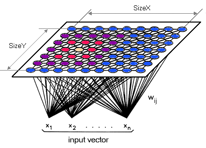

Welcome to Josiah Coad's Profile
What I am Doing
I am an undergrad double major in CS and Statistics at Texas A&M University. I just finished my first internship at Microsoft and am currently travelling and studying at Oxford for a semester!
My Past
I come from Idaho, one of the lowest income and college matriculation rates of the nation. I have put myself through college working 2, sometimes 3 jobs simutaneously. 3 years ago I found the convergence of my love for people and technology while volunteering at a hospital. Now I live to improve peoples lives through innovations in technology and believe this path will take me to a graduate degree in AI.
My Personality
I am a hybrid of ENFJ and ENTJ. I am externally focused. I like people around me and working on teams. I think through things logically... most of the time. I tend to be big picture oriented and can sometimes miss the details. I like organized systems and will work at resolving ambiguity. My strengths: Avid learner. Effective teacher. Proactive. High acheiver. Not afraid to try new things. Clear focus and determination.
My Mission

Code
Some Programming Languages I Really Like
Python
My first and favorite. Have used in hackathons, NN research, taught it to a team in underwater robotics, used it in summer internship in geometric gcode generation, and undergrad research building a remote scientific weather sensor, interfacing and logging over 10 scientific sensors RT.
Javascript
Used in a sketch-rec based website builder for undergrad research. Also used it to create a full-fledged web-based drawing platform and UI for a 3D printing software during my 2016 internship at Continous Composites.
C++
It's the lowest level language I know and I like that I have more control over what's happening. I've used it in nearly all my school projects and homeworks including graphics, object oriented programs and data structures/algorithms.
Bash Scripting
Bash shell scripts and the terminal have become the essentials for my daily computer activities. I've also used them to automate tasks on a Raspberry Pi for a weather research station and robotics. Check out my favorite creations of productivity bash scripts on github
MY PROJECTS
Really I find a lot of things fun to do -- here are some of them.
-

DreamMkr
Contracted with my brother through our business CodeBros. Made a drawing platform on a Paper JS HTML5 canvas for a new proprietary 3D printing methodology. User could draw, transform, edit layers, snap to grid, export drawing, etc.
-
FreeStyle
Class project for grad course, Sketch Recognition, taught by Dr. Tracy Hammond. A sketch-rec based website designer built from scratch implimenting convex-hull algorithms among others. See video here
-

MATE Robotics
I was lead Computer Engineer and co-founder of a underwater robotics team with over 40 members. I taught Python and Javascript. We set up Raspberry Pi running Linux OS as a web server utilizing http protocol for controller communication.
-

Weather Station
Lead a team of three in undergrad research for remote sensing. See poster! Built software and hardware for a remote meterological research station taking data from over 10 scienific sensors and transmitting it back to base.
-

HackRice
Developed a chrome plugin for github that suggests repos you might like (GitStub). Won first place in the best console app and best big data app. Also won second overall at the Hackathon with over 200 people.
-

Amazon Fake Reviewers
Used big data algorthms and a self organizing map neural network to identify fake reviewers on a team of graduate students.
Fly me a Message :)
josiah@coad.net
Check Out More
| github | linkedin | facebook | tedTalks | resume |